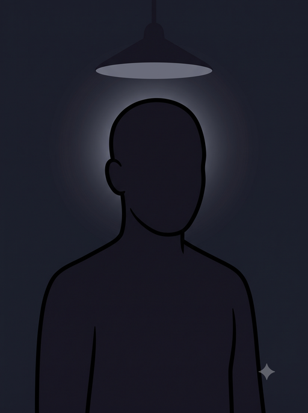

A detective game whose difficulty ceiling is not a setting — it's a
theorem. And then you get the one tool that breaks it, with odds
measured on a real quantum computer.
The setup, in three steps
1Suspects come in
pairs. Every case is two machine-suspects who are secretly either
PARTNERS (their stories agree no matter who is questioned first) or
RIVALS (their stories come out exactly opposite depending on order).
Your job: say which.
2One question
each. You may question each suspect exactly once, through an interrogation kit.
Here's the wall: mathematics proves that no kit that exists and no kit anyone will ever
invent can average above 91% on this task. Not "hard to beat" —
proven impossible, the way perpetual motion is impossible.
3The forbidden
zone. A quantum computer can question both suspects in a superposition of both
orders at once — a physically different kind of question. Measured score:
97.8%. You'll earn that kit after ten honest rounds.
Why this matters: the 91% ceiling binds every strategy under normal
cause-and-effect — every gadget, every entangled trick, every adaptive scheme, as long as the
two questions happen in some order. Beating it isn't better detective work; it
requires the order of events itself to be quantum. When your accuracy crosses the red line,
you're holding statistics that ordinary causality provably cannot produce.
Game rules
Each round, a case is dealt: two suspects, hidden as silhouettes.
(If you could see who they are, you could memorize the answer key — the ceiling is a
theorem about detectives who can't see inside the boxes. Identities are revealed
after you call.)
PARTNERS and RIVALS are dealt 50/50, so guessing blindly scores 50%.
Choose a kit, then press Interrogate. The kit questions each suspect once
and reports its verdict: "PARTNERS" or "RIVALS."
Kits are honest but imperfect — each has a real, physics-derived success rate
per case. The Rookie Kit (separate standard interviews) averages
57.5%. The Entangled Casefile (a linked two-part file each suspect stamps
once) averages 75% — the strongest kit we know how to build.
You make the final call — trust your kit or override it. Correct call = 1 point.
After 10 rounds you earn the ⚡ Switch Badge: the same
cases resolved with the measured odds of the real quantum switch. Watch the meter cross
the line the theorem draws.
A detective's tip: your best kit has a blind spot — a kind of
suspect it is reliably, perfectly wrong about. You'll find it the honest way: by losing.
The reveal log will tell you why. (It's real physics, not a gimmick — the same feature that
makes this game winnable at all.)
The interrogation room
How a round works:1 Interrogate with a kit →
2 read its report and make your call → the case file opens.
CASE #— · suspects unidentified

?
?
2Make your call
— press a kit to interrogate —
The kit's report is honest but imperfect — trust it, or override it with
your hunch. Your call is what scores.
Your accuracy
—+1
✓ 0✗ 0 0 played
The red line at 91% is THE CEILING — the proven
maximum for any kit, ever, under definite causal order. Beyond it is the forbidden zone:
only the switch reaches it.
Case log
🔍 What's really true here
The suspects are quantum operations. PARTNERS = commuting, RIVALS =
anticommuting, dealt 50/50 from a 20-case deck. Kit reports resolve against honest
physics-derived odds per case; the Casefile's blind spot (the "do-nothing" suspect) is a real
structural fact — remove those cases and the theorem's ceiling silently rises to 100%, which is
why they're load-bearing.
The ceiling is a theorem. For this balanced game the causally-separable
bound is 0.9098 (Araújo et al. 2015; re-derived from scratch and machine-verified in the
repository, including the optimal input
distribution the original paper omitted). It covers fixed orders, random mixtures of orders,
and orders chosen adaptively mid-game — everything except no definite order at all.
The switch column is a measurement. The real experiment scored
p̂ = 0.9769 ± 0.0005 — 216.8σ above the ceiling — on ibm_marrakesh
(job d9826lkqp3as739sd2lg, frozen pre-registration), and replicated the next day
on ibm_fez, a chip it had never touched, at 0.9738. Even the single worst case in
the deck beats the ceiling on its own.